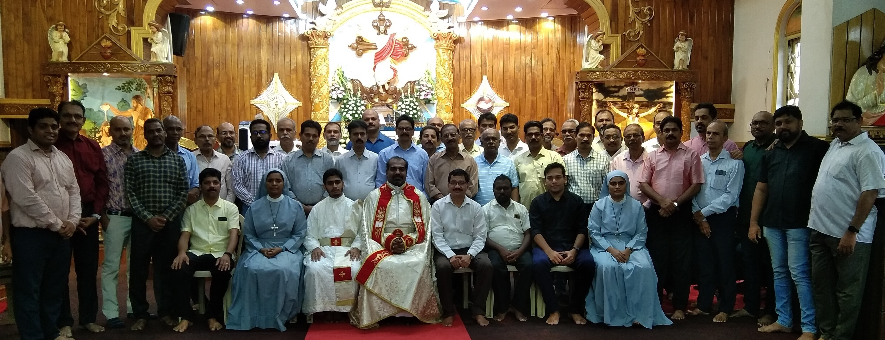

Sacred Heart Bhayandar Pitruvedi has a rich history of community engagement and achievements. It was established in 2015 under the guidance of former parish priest Fr. Jomon Kurishinkal, aiming to unite married men and increase their involvement in church activities. The organization's growth was marked by the election of Mr. P.J. Varghese as its representative in the Parish council. Over the years, Pitruvedi actively participated in various Diocesan and forane activities and competitions, bringing home prizes and accolades. Notable wins include the KAIRO Bible Quiz and Diocesan Drama competition. Additionally, the organization initiated the "Food for the Poor" program to provide assistance to needy families
The Sacred Heart Church celebrated Ash Monday in solemn remembrance of human mortality and need for reconciliation with God and marked the beginning of the Lent of Repentance by offering Holy Qurbana led by Parish Priest Fr. Binoy
The Sacred Heart Church celebrated Ash Monday in solemn remembrance of human mortality and need for reconciliation with God and marked the beginning of the Lent of Repentance by offering Holy Qurbana led by Parish Priest Fr. Binoy
A culinary delight of our parish, where flavors danced on the tongues, crafted with love and expertised. A vibrant hub of camaraderie and mouthwatering memories we cherish dearly.The musical night organized resonated with joyous melodies, bringing the community together.
In 2015, Sacred Heart Pithruvedi was established to engage married men in church activities, with Mr. P.J. Varghese elected as the representative, and it was officially inaugurated on 23rd August 2015, with Rev. Father George Vattamattam and Adv. Mr. Samji Joseph as chief guests.
Sacred Heart Bhayandar Pitruvedi actively engaged in Diocesan and forane activities, achieving competition success like ncluding winning 3rd prize in the Extempore Speech competition, 2nd prize in the Biblical Short play competition, and initiated the "Food for the Poor" program, providing monthly fresh food packets to those in need.
On 19th March 2017, Pithruvedi celebrated the feast of St. Joseph grandly, and on 26th March 2017, they organized a successful Free Medical Camp with Karuna Hospital Borivali, attended by 323 patients. Additionally, in the KAIROS-2017-BIBLE QUEZ Competition, their team won 1st prize with members Mr. M A Jose, Mr. Joseph Thomas, and Mr. Varghese Kuttikat.
On 25th February 2018, Bhayandar Pithruvedi elected new leaders, achieved 1st prize in KAIROS-2018 BIBLE QUEZ Competition, actively participated in various events, and organized a successful Free Medical camp.
In 2019, Bhayander Pitruvedi excelled, securing 1st prizes in KAIRO -2019 BIBLE QUEZ Competition and Kalyan Diocesan Badminton Competition, while also initiating a redesigned "Food for the Poor" program and winning 1st prize in the Diocesan Drama competition with "Vasumathi," earning accolades for Best Director and Best Child Artist.
During the time of Covid -19 Pandemic, Our Pithruvedi members actively participated in preparing food kits for the Covid affected families under the banner of Karunya Trust.
During 2021-2023, Pithurvedi Unit elected new leaders, celebrated St. Joseph Day, organized Young Couples Day, and engaged in charity, providing food for approximately 350 orphaned children and donating Rs. 40,000 for classroom repair work. into 1 line.
Pitruvedi accomplished NORKA registration for 250+ members and obtained Voters ID for 52 members, secured 3rd prize in Badminton at the diocesan level, won 2nd prize in the Zone level for the Christmas Crib Competition, and actively engaged in Appachan’s Chayakkada and the Musical night during the parish feast.
In June 2023, Pitruvedi held its elections for the year 2023-24, with Fr. Binoy Achan and Sister Vimal Maria present. Mr. E P Joseph became the new President, along with other elected members for various positions.
| Sr No | Name | Designation |
|---|---|---|
| 1. | Fr. Binoy Kannanaikkal | Parish Priest |
| 2. | Mr. E. P. Joseph | President |
| 3. | Mr. Joy Abraham | Vice-President |
| 4. | Mr. Mathew P | Secretary |
| 5. | Mr. V. K. Joemon | Joint Secretary |
| 6. | Mr. A.C. Sabu | Teacher |
| 7. | Mr. Roy Philip | Forane Committee |
| 8. | Mr. T. P. Sajan | Forane Committee |
Fatak Rd, Bhayandar, Vikas Industrial Estate, Bhayandar East,Thane- 401105
022-2819 2096
sacredheartchurchbhayandar@gmail.com | parishpriest@sacredheartchurchbhayandar.org